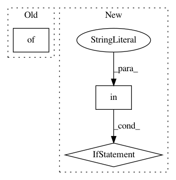

92be5e2d7ece8c25a783e32959361d9dead612ba,examples/variants.py,,get_variant_spec_image,#Any#Any#Any#Any#,441
Before Change
variant_spec["preprocessor_params"].update({
"function_name": "simple_convnet",
"kwargs": {
"image_size": variant_spec["env_params"]["image_size"],
"output_size": 18,
}
})
if task == "image-default":
variant_spec["env_params"].update({
After Change
variant_spec = get_variant_spec(
universe, domain, task, policy, *args, **kwargs)
if "image" in task or "image" in domain.lower():
variant_spec["preprocessor_params"].update({
"function_name": "simple_convnet",
"kwargs": {
"image_size": variant_spec["env_params"]["image_size"],
"output_size": 18,
"num_conv_layers": tune.grid_search([2, 3, 4]), // 4 later
"filters_per_layer": tune.grid_search([16, 32]),
"kernel_size_per_layer": (5, 5),
}
})
if task == "image-default":
variant_spec["env_params"].update({
// Can"t use tuples because they break ray.tune log_syncer
"image_size": tune.grid_search(["32x32x3"]),
In pattern: SUPERPATTERN
Frequency: 3
Non-data size: 3
Instances
Project Name: rail-berkeley/softlearning
Commit Name: 92be5e2d7ece8c25a783e32959361d9dead612ba
Time: 2018-08-25
Author: kristian.hartikainen@gmail.com
File Name: examples/variants.py
Class Name:
Method Name: get_variant_spec_image
Project Name: rail-berkeley/softlearning
Commit Name: 6b89f79d0d43a109b3ff12298a28f221b2377b19
Time: 2018-07-29
Author: kristian.hartikainen@gmail.com
File Name: examples/mujoco_all_ray.py
Class Name:
Method Name: main
Project Name: rail-berkeley/softlearning
Commit Name: 9ec29d178a98cd2648f0af079bfc4aac27693e88
Time: 2018-10-19
Author: hartikainen@berkeley.edu
File Name: examples/multigoal_sac.py
Class Name:
Method Name: main